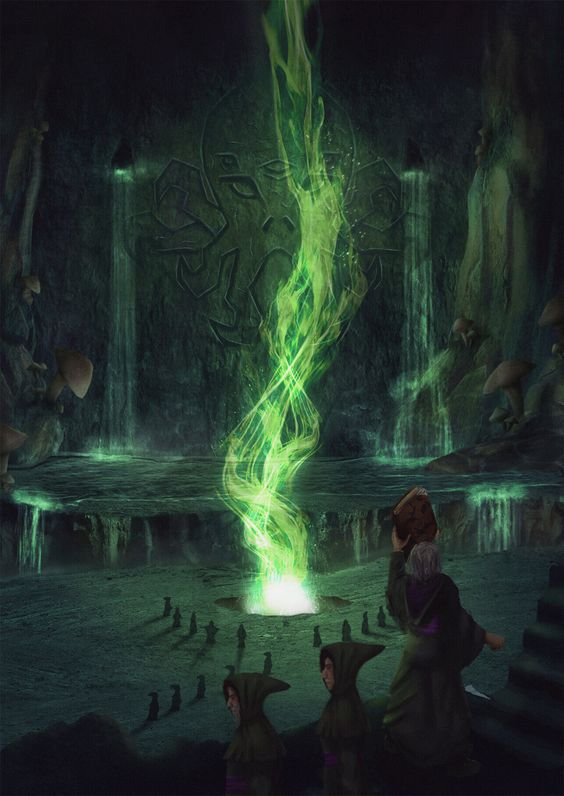

<!DOCTYPE html>
<html lang="pt-br">

</html>

<head>
    <meta charset="UTF-8">
    <meta name="viewport" content="width=device-width, initial-scale=1.0">
    <title>Yule | Piano_melodic</title>
    <link rel="icon" href="assets/logo.png">
    <link rel="stylesheet" href="style/styles.css">
</head>

<body>
    <header>
        <nav class="cabecalho">
            <div class="cabecalho__logo">
                <a href="javascript:history.go(-1)"></a>
                <h1 class="cabecalho__titulo">Piano_melodic</h1>
            </div>
            <ul class="cabecalho__menu">
                <li><a href="index.html" class="cabecalho__menu__link">Home</a></li>
                <li><a href="composition.html" class="cabecalho__menu__link">Composições</a></li>
            </ul>

        </nav>
    </header>
    <main class="texto">
        <div class="coluna_primaria">
            <section class="texto__conteudo">
                <h1 class="texto__titulo1">Yule</h1>
                <p class="texto__paragrafo">"Yule" é uma composição musical que busca capturar a atmosfera única e perturbadora do conto "O Festival" de H.P. Lovecraft que a inspirou.</p>
                <p class="texto__paragrafo">A música transporta os ouvintes para um mundo sombrio e misterioso, onde segredos antigos e horrores cósmicos se entrelaçam.</p>
                <p class="texto__paragrafo">A introdução é marcada por acordes sombrios e sinistros, criando uma sensação imediata de tensão e mistério. A melodia se desenrola de forma ingênua, expressando cada vez mais a inquietação da persongem sobre o culto mistíco. O clímax de apresenta com o horror súbito do culto milenar. A fuga pelo inconsciente traz o conforto de um sonho à mente da persongem.</p>
                <p class="texto__paragrafo">"Yule" é mais do que uma simples composição; é uma jornada musical que imerge os ouvintes no mundo enigmático e sombrio criado por H.P. Lovecraft, proporcionando uma experiência sensorial única e inesquecível.</p>
            </section>
        </div>
        <div class="coluna_secundaria">
            <section class="texto__conteudo">
                
            </section>

            <section class="texto__conteudo">
                <a class="texto__paragrafo" href="#">Ultimos lançamentos</a>
            </section>
            <div class="audio-player">
                <audio src="./mp3/Yule.mp3" autoplay></audio>
            </div>
        </div>
    </main>
    <footer class="rodape">
        <hr>
        <p class="rodape__texto">Sem a música a vida seria um erro - Friedrich Nietzsche</p>
        <div class="rodape__topicos">
            <ul class="rodape__lista">
                <li>
                    <a class="rodape__lista__link" href="https://www.instagram.com/piano_melodic/"
                        target="_blank">Instagram</a>
                </li>
                <li>
                    <a class="rodape__lista__link" href="#" target="_blank">YouTube</a>
                </li>
                <li>
                    <a class="rodape__lista__link" href="#" target="_blank">Pinterest</a>
                </li>
                <li>
                    <a class="rodape__lista__link" href="#" target="_blank">Musescore</a>
                </li>
            </ul>
        </div>

    </footer>
</body>

</html>